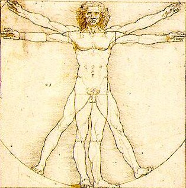

-
A philosopher is a person who reliance on common sense and intuitions, use of thought experiments,
analysis of ordinary language, description of experience, and critical questioning.
-
Why were they importand?
Philosophy is more than theoretical knowledge; it often has practical consequences and implications for generations to come.
Democracy would not exist without philosophers—from Plato to Locke to Kant to Rawls into the present—thinking about justice, freedom, liberalism, and equality.
-
Do philosophy influences modern society?
- The shot answer is yes! Since philosophy influences modern society in several key ways such as:
- Ethical Frameworks, Critical Thinking, Political Theory, Education, Cultural Values, and Social Justice.
In essence, philosophy provides the framework for critical thinking and inquiry that underpins many aspects of modern life,
prompting us to question assumptions and seek deeper understanding.